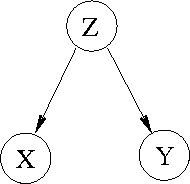

|
Leo Lahti*¹ and Olli-Pekka Huovilainen¹
(1) Department of Information and Computer
Science, Aalto University, Finland. |
 |
AlgorithmsProbabilistic versions of PCA [1], factor analysis [2], and CCA [3-4] are obtained as special cases of a general latent variable framework for dependency modeling (see vignette for details). Probabilistic framework deals rigorously with the uncertainties associated with small sample sizes, and allows incorporation of prior information in the analysis. Further tools are available for regularized dependency detection [5-6] and dimensionality reduction [8]. Test runs for many models are available here, including example scripts and performance statistics. Applicability of the models has been demonstrated in previous case studies [5-8].System requirementsTechniques for the discovery and analysis of statistical dependencies are implemented in R, an open source environment for statistical computing. This is available for all major platforms, including Linux, Mac, and Windows.InstallationSee the package vignette for installation instructions and functionality. Source code is available from project page at R-Forge. For application tools for data integration in functional genomics, see pint BioConductor package.Licensing termsLicensed under the FreeBSD open source license.Acknowledgements
Authors: Leo
Lahti and Olli-Pekka Huovilainen.
Contributors: Arto Klami, Abhishek Tripathi.
The authors are associated with the Statistical Machine Learning and
Bioinformatics group at the Department of Information and Computer
Science, Aalto University, Finland.
Your feedback and contributions are welcome.
See
the project page at
R-Forge, or contact project
admin.
References
|